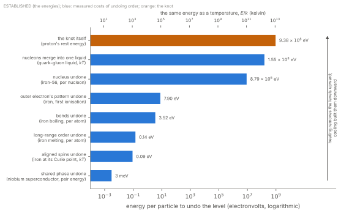
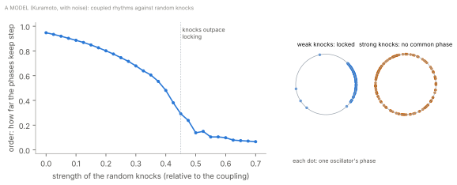

Library › The Unified Framework for the Graviton Pressure Theory
Coherence
The Order and Structure of Matter
About This Paper
Part 19 said what the states of matter are: degrees of collective phase order among the knots of a body, from the fixed arrangement of a crystal to the shared phase of a superconductor.1 This paper is about the order and structure of matter, and above all how matter changes its order: how each level of order is held, what heat does to it, why some substances lose their order at one temperature and others over a range, with a definite exchange of energy, why it forms again on cooling and what it keeps when it does, and what each kind of order allows, from the stiffness of a solid to the flow of a liquid with no friction at all.
Its central idea is the first edition’s, and it stands stronger now than when it was written: heat does not destroy structure by force; it destroys the timing that order requires. [Argued] Part 18 supplied the mechanism, rhythms locking through what they share, and Part 19 supplied what is locked, the phases of the knots.2 The graviton is in Part 15, the field in Part 16 and mass in Part 17.345 Claims are marked by their status, as the key shows.
Order Has Levels
Iron shows the whole ladder (Figure 1). At 1,043 kelvin its aligned spins disorder and it stops being a magnet. At 1,811 kelvin it melts, taking in 13.8 kilojoules a mole, 0.14 electronvolts an atom. At 3,134 kelvin it boils, taking in about 340 kilojoules a mole, 3.5 electronvolts an atom, twenty-five times as much. Hotter again, near ten thousand kelvin and beyond, its atoms lose their outer electrons, 7.9 electronvolts for the first. Its nuclei hold together until energies of 8.8 million electronvolts a nucleon, and the nucleons themselves dissolve into a single liquid of their parts only near two trillion kelvin, in the collisions of heavy nuclei at the largest accelerators.6 The knots at the bottom of it all, the electron and the proton’s lobes, are not undone by heat at all; a knot is unmade only by meeting its mirror (Part 19).

The ladder answers a question the first edition raised. [Argued] It said that “melting is not caused by bond dissociation, but by the structural collapse of graviton coherence”. The numbers agree. The energy of iron’s bonds, its cohesive energy, is 4.3 electronvolts an atom, about \(5.8\times10^{10}\) joules in every cubic metre; melting takes 0.14 electronvolts an atom, about 3% of it. So melting removes the long-range arrangement of the atoms and leaves their bonds almost whole; it is boiling that breaks the bonds. A liquid is a solid that has lost its arrangement and kept its bonds.
The same reading corrects a gas. The first edition called a gas “fully decoherent”, with “all phase-aligned oscillation” lost. A gas has lost only the order between its atoms; every atom in it keeps all of its own internal order, its electron patterns locked around its nucleus, its nucleons bound, its knots intact. Coherence is nested, and a transition is the loss of one level of it. Some substances show the levels coming off one at a time. [Argued] A liquid crystal such as 8CB is a crystal below 21.5 \(^\circ\)C; above it, its rod-shaped molecules lose their fixed positions but stay in layers; above 33.5 \(^\circ\)C they lose the layers but still point the same way; above 40.5 \(^\circ\)C they lose that too and the substance is an ordinary liquid. Three transitions, each removing one kind of order and keeping the rest.
What Heat Is
Heat is energy delivered as disordered motion. [Argued] It reaches a body in two ways, and each can be followed to what touches what.
By knocks. At a contact the patterns of two atoms overlap, and patterns of the same circulation push each other apart (exclusion, Part 19). A fast atom striking a slow one hands over momentum through that push. Each knock shifts the struck pattern’s motion and its phase relative to its neighbours.
By light. Light is a transverse wave of the medium (Part 15). Its energy is taken up by the electron patterns, which shift into higher standing patterns and pass the energy to their neighbours as they settle, again as knocks.
So heat acts on order through phase. [Hypothesis] The first edition said that heat is “not an energizer but a decoherence catalyst”. Measurement requires both readings at once. Heat is energy: ice takes in 334 kilojoules a kilogram to melt, and a body’s mass rises by the energy it holds divided by \(c^2\), so a kilogram of iron melted is heavier by \(2.8\times10^{-12}\) of its mass (Part 17). And what that energy does is disorder: it scatters the phases that order keeps aligned. The energy is how much is delivered; decoherence is what it does. [Argued] Temperature measures the average energy of the disordered motion, about \(kT\) for each way a particle can move, where \(k\) is Boltzmann’s constant. It is a measure of the knocking, not a separate cause.
Locking against Knocks
This is a known piece of mathematics before it is a claim about matter. In 1975 Yoshiki Kuramoto described a population of rhythms, each with its own natural rate, each pulled toward the common phase of all.7 Below a critical strength of coupling the rhythms run independently; above it a common phase appears suddenly and grows. Adding random knocks has the same effect as weakening the coupling: with the coupling fixed, order falls as the knocks strengthen and vanishes at a definite point (Figure 2). The same mathematics describes flashing fireflies, the pacemaker cells of the heart and arrays of electrical oscillators; Part 18 named each as an example of locking.

The first edition already had the measure of this order. Its part on magnetism (Part 22 in this edition) defined the coherence of \(n\) spins with phases \(\phi_i\) as \begin{equation}C_s = \frac{1}{n}\left|\sum_{i=1}^{n} e^{i\phi_i}\right|,\end{equation} which is 1 when every phase is the same and near 0 when they are scattered round the circle. It is the same quantity Kuramoto’s model uses to measure how far a population keeps step, and it is what Figure 2 plots.
Matter shows the signs of this contest in measured rules. [Argued]
Lindemann’s rule (1910). A solid melts when the jiggling of its atoms reaches about a tenth of the distance between them.8 The first edition’s version: collapse comes “when internal oscillations can no longer align”. It was already measured.
Richards’s rule (1897). For metals, the energy taken in on melting is close to \(kT\) at the melting point for every atom: iron takes 0.143 electronvolts an atom at 1,811 kelvin, where \(kT\) is 0.156.9 Melting costs about one typical knock’s worth of energy per atom. In GPT that is the price of releasing each atom from the common phase of the lattice. [Hypothesis]
Trouton’s rule. Boiling takes about ten times \(kT\) per molecule at the boiling point for most liquids, and somewhat more for metals (iron, thirteen). Bonds cost an order of magnitude more to undo than arrangement.
How order is lost depends on how it is held.
Some substances lose their order at one temperature, and others over a range. Which one happens is set by the structure, not by the kind of transition.
At one temperature: pure, uniform crystals such as metals, ice and salt. At its melting point a solid takes in its latent heat at a fixed temperature, and while it does, solid and liquid sit side by side.
Over a range: glasses, waxes, butter and many plastics have no melting point; they soften gradually. Most alloys melt between two temperatures: common 60/40 tin–lead solder is pasty between 183 and 190 \(^\circ\)C, while the one exact mixture called the eutectic, 63/37, melts sharply at 183.
Different arrangements of one substance: cocoa butter can crystallise in six forms, which melt at six temperatures between about 17 and 36 \(^\circ\)C. Same molecules, different order, different melting point.
Fewer neighbours, weaker hold: even a sharply melting crystal begins to melt at its surfaces and grain boundaries, where atoms have fewer neighbours. Ice carries a liquid-like layer at its surface below 0 \(^\circ\)C, as Faraday proposed in 1850, and gold particles a few nanometres across melt hundreds of degrees below bulk gold.10
In GPT the reason is how each pattern is held in step: by its neighbours, through the medium. [Hypothesis] In the mathematics of locking, the pull that brings each rhythm back into step grows with how many of the others are already in step. So the lock reinforces itself, and its loss can cascade: when some patterns let go, their neighbours lose part of their hold and follow. Where every pattern is held the same way, as in a uniform crystal, all reach their limit together and the loss cascades through the whole body at one temperature. Where the hold varies from place to place, as in a glass, a mixture or a body with many surfaces, each region lets go at its own temperature and the loss spreads over a range. [Hypothesis] The small particles show that the hold depends on the neighbours: fewer neighbours, a weaker hold, a lower melting point. How the hold is carried inside a body, what flows through its structure and what directs that flow, is the subject of Part 21.11
Cooling: Order Forms, and Needs a Seed
When a body cools through a transition, the order forms again and the energy comes back out: freezing water gives up the same 334 kilojoules a kilogram it took to melt it. In GPT the released energy is the disorder handed back to the medium, as light and as knocks to the surroundings, when the patterns fall into step. [Hypothesis]
Order needs somewhere to start. [Argued] Clean water can be cooled far below its freezing point and stay liquid; small droplets of pure water reach about \(-38\) \(^\circ\)C before they freeze on their own.12 A dust grain, a scratch or a crystal of ice dropped in starts the freezing at once, and it spreads from that point. In the language of locking, the common phase needs a first group of patterns already in step, large enough that it pulls its neighbours in faster than knocks pull them out. A seed is a region already locked, and freezing is the lock spreading. [Hypothesis]
Order formed on cooling keeps a record of the conditions in which it formed. [Argued] Lava cooling through iron’s Curie point is magnetised in the direction of the Earth’s field at that moment and keeps it for hundreds of millions of years; the record of the field’s reversals in the ocean floor is read this way.13 A magnet’s magnetisation depends on its history as well as on the field it is in now, the effect called hysteresis. Part 18 said that the past exists as persisting structure. Memory in matter is literal: it is order that was set at a transition and has not since been undone. [Argued] The first edition’s phrase “heat erases memory” is kept in this sense. Part 13’s activation record proposes the same principle for living things: a small bias at a moment of ordering decides a lasting order.14
Solids: Arrangement Held in Step
The first edition described solids as “graviton pressure traps”, with “closed-loop corridors” resolving the pressure of the medium inside them. The restatement names what touches what: patterns overlapping, sharing electrons, pushing back where their circulations match. Its point survives: solidity is not the absence of motion but the active maintenance of order. [Argued] Every pattern in a solid turns at its own rhythm, \(10^{20}\) times a second for an electron (Part 18), and holds its place by staying in step.
Two pressures.
The first edition gave the internal pressure of a solid as \(10^{10}\) to \(10^{12}\) pascals. That is a real quantity, but not the medium’s pressure in empty space. It is the energy density of matter’s binding: iron’s cohesive energy is \(5.8\times10^{10}\) joules a cubic metre, and its resistance to compression, its bulk modulus, is \(1.7\times10^{11}\) pascals. Read in GPT, it is the energy of the medium organised into a solid’s bonds. [Hypothesis] The medium’s pressure in free space is about \(4.5\times10^{-10}\) pascals, the value that passes the heat budget (Part 15). The two are different quantities and both stand. What does not stand is the first edition’s statement that melting iron is a fall in internal pressure from \(10^{12}\) to \(10^{10}\) pascals: melting takes about 3% of the binding energy, not 99% (Section “Order Has Levels”).
Directions.
A crystal is not the same in every direction, and its order can fail unevenly. Many crystals expand by different amounts along different axes when heated; magnetic crystals have easy axes along which their spins prefer to point. The first edition’s “anisotropic collapse” is kept with these as its examples.
Liquids, Glass and Flow
A liquid keeps order between neighbours only, and that order is constantly broken and re-formed. [Argued] X-ray and neutron scattering show it directly: in a liquid each atom has a shell of nearest neighbours at a well-defined distance, a fainter second shell, and almost no order beyond.
The relation runs across an enormous range. In water the local order re-forms in about a picosecond, and its viscosity is a thousandth of a pascal-second. Pitch looks solid and shatters under a hammer, but it flows: in the experiment begun at the University of Queensland in 1927, a drop falls from a funnel about once a decade, and its viscosity is about \(2\times10^{8}\) pascal-seconds.15 A glass is a liquid that ran out of time to arrange itself. [Argued] As a liquid that does not crystallise cools, its local order takes longer and longer to re-form, until at about \(10^{12}\) pascal-seconds the re-forming takes minutes and the liquid is held in place, disordered but fixed. That is the glass transition. The first edition’s three “exotic” cases each now have a mechanism:
Glass: order held without arrangement, because the time to arrange grew longer than the cooling allowed.
Viscoelasticity: a material that acts as a solid for pushes faster than its relaxation time and as a liquid for slower ones.
Superfluidity: flow with no viscosity at all, because the whole body shares one phase and there are no neighbours to slip past (Section “Shared Phase”).
Gases and Plasmas
In a gas the atoms or molecules keep no lasting relation between their phases [Argued]; each moves freely between collisions and is knocked into a new motion at each one. What it keeps is everything inside it (Section “Order Has Levels”).
A plasma is a gas in which the outer electron patterns have come loose from their nuclei. [Argued] The first edition called it “hyper-decoherence”. That is half right. One level of order is lost, the locking of electron patterns around nuclei, at the measured ionisation energies: 13.6 electronvolts for hydrogen, 7.9 for iron’s first electron. But loose charges organise themselves strongly through what they carry, and plasmas are full of collective order: waves, filaments, sheets, and the reconnection of magnetic fields that drives solar flares. A plasma loses one level of order and gains a new collective order through charge [Hypothesis], the hand of the knot (Part 19).
Aligned Spins and the Curie Point
In a magnet the spins of unpaired electrons point together across regions called domains. [Argued] Above the Curie point, 1,043 kelvin for iron, 627 for nickel and 1,388 for cobalt, the knocks outpace the coupling that aligns them and the alignment is lost (Section “Locking against Knocks”). Below it, the alignment returns as the metal cools.
Spin is real rotation, exchanged with the body that holds it. [Argued] In 1915 Einstein and de Haas magnetised a suspended iron rod and it turned: aligning its electrons’ spins took angular momentum that the rod gave up as rotation. Barnett showed the reverse the same year: spinning a rod of iron magnetises it.16 In GPT this is expected: spin is the circulation of a knot (Part 19), and aligning spins aligns circulations. [Hypothesis]
Part 19 proposed what the alignment does: each spinning knot’s counterflow carries a swirl, and swirls aligned across a material add, so that magnetism is the collective swirl of aligned matter. [Hypothesis] The first edition described magnetism as the “externalization” of graviton pressure, with the strength of a magnet growing as the cube of a “coherent graviton density”. The cube law had no derivation and is withdrawn, and so is the statement that magnetism is gravity resolved along an axis: torsion balances carrying masses with \(10^{23}\) aligned electron spins show no change in their gravity.17 Gravity and magnetism are different modes of the same medium, inflow and swirl. The first edition’s magnetism parts also gave spin alignment a role in directing the medium’s path through a material, and named the timing that requires. That account, with the full treatment of magnetism, belongs to Parts 21 and 22.18
Shared Phase
In GPT phase is literal [Argued], the medium’s own phase in each pattern (Part 19), and shared phase is the medium in a body keeping one step throughout it. Measurement shows a sign of it. In a superconducting ring the magnetic flux trapped inside comes only in whole units of \(h/2e\), Planck’s constant over twice the electron’s charge.21 The standard account describes this with a wavefunction whose phase must close on itself around the ring a whole number of times, but it names nothing physical whose phase that is. GPT names it: the phase is the medium’s own, carried round the ring by the shared pattern; it must return to itself after one circuit, so the swirl it encloses comes in whole turns. [Hypothesis] The \(2e\) shows that the current is carried by electrons in pairs. In GPT a pair is two knots of opposite circulation sharing one pattern, as two electrons share a bond [Hypothesis] (Part 19); the pairs in ordinary superconductors are indeed made of electrons of opposite spin.
Superconductors do not reflect gravity.
The first edition said that superconductors reflect graviton fields, and read the Meissner effect, the expulsion of a magnetic field from a superconductor, as “corridor reflection”. Superconductors weigh normally: superconducting gravimeters float a niobium sphere in a magnetic field and measure the Earth’s gravity through it to about one part in \(10^{11}\).22 The claim is withdrawn. The Meissner effect is measured as currents circulating within a thin layer at the surface, about 40 nanometres deep in niobium, which cancel the field inside.23 In GPT a magnetic field is a swirl of the medium (Part 16), and a body in one shared phase cannot hold a swirl inside it without breaking that phase; its surface circulates against the swirl and keeps it out. [Hypothesis]
Universality
The first edition’s central claim, that the loss of magnetism and the behaviour of fluids have one cause, has measured support. [Argued] Near the critical point of a liquid, where liquid and gas become indistinguishable, the difference between their densities shrinks as the temperature rises, following a power of the distance from the critical temperature. In 1945 Edward Guggenheim plotted the measurements for eight different substances, neon, argon, krypton, xenon, nitrogen, oxygen, carbon monoxide and methane, and they fell on one curve, with a power close to one third.24 Magnets whose spins can point only one of two ways lose their magnetisation near the Curie point with the same power, about 0.33.25 Substances that share nothing chemically, and transitions that look nothing alike, behave identically there.
The standard account describes this without a mechanism. It finds that near a critical point, regions of order grow so large that the details of what is ordered stop mattering, and only the dimension of space and the number of ways the order can point remain. It does not say what carries the order across those regions, or why the details drop out. GPT supplies both: in every case the order is a phase relation among patterns of one medium, and the medium that every pattern shares is what carries the locking from neighbour to neighbour across a growing region. Near the critical point what decides the outcome is the medium’s locking itself, which is the same in every substance, rather than the particular patterns being locked. [Hypothesis] The first edition’s instinct was to treat melting, magnetism and fluid behaviour as one subject. Universality shows that, near their critical points, they are.
What Order Does Not Do
A change of order changes a body’s weight only by the energy it takes in or gives out. [Argued] The total delivery of the medium to a body tracks its energy, whatever its structure (Part 15). Freezing a kilogram of water lowers its mass by \(3.7\times10^{-12}\) of itself; melting a kilogram of iron raises it by \(2.8\times10^{-12}\). Nothing else in the total is predicted to change. What may change is where inside the body the delivery lands [Hypothesis]: an ordered body may receive it differently along its planes than a disordered one, so that its centre of gravity shifts slightly from its centre of mass. Whether it does is untested, and the tests are below.
Tests
The first edition proposed heating a kilogram of iron through its melting point with a gravimeter 1 to 2 centimetres away, and predicted a change in gravity of “5–10 \(\mu\)g”; the units it meant were microgals, \(10^{-8}\) metres per second squared. The test needs reshaping. The iron’s own gravity at 2 centimetres is about \(1.7\times10^{-7}\) metres per second squared, and iron changes its density by a few per cent on melting, so the change of shape alone alters the reading by \(10^{-9}\) to \(10^{-8}\), the size of the predicted effect. The iron also passes its Curie point first, at 770 \(^\circ\)C, where magnetic forces would swamp everything. And the agreed account predicts no change in the total beyond the mass change, \(2.8\times10^{-12}\). Better versions:
Weigh gallium through its melting point, at 29.8 \(^\circ\)C: room temperature, no magnetism, and a mass change of \(9\times10^{-13}\), far below what mass comparators resolve (about \(10^{-10}\) on a kilogram). The prediction is null in the total; any change in the weighing beyond the change of shape would be a signal. [Hypothesis] Water through freezing is a second case.
Look for a shift in where the delivery lands. A torsion balance carrying a single crystal, turned through its orientations and taken through a change of order, looks for the centre of gravity moving away from the centre of mass. This test is shared with Part 29.26
Weigh a superconductor through its transition. An experiment of this kind, named Archimedes, is being built to weigh the energy of the vacuum in a layered superconductor as it changes state.27 Its result will bound any change in weight with the onset of shared phase.
One clock in two states of order. Every kind of clock tested is slowed alike by the medium (Part 18). Whether a single clock taken through a change of its own order is slowed by the same factor is untested.
What Remains to Be Derived
The temperatures of transitions from the phase relations of the knots: why iron melts at 1,811 kelvin and loses its magnetism at 1,043. [Open]
The strength of the coupling between neighbouring patterns, carried by the medium, in terms of the medium’s own properties. [Open]
Why pairs form in superconductors, and the temperature at which they do, in terms of knots of opposite circulation sharing a pattern. [Open]
The relaxation times of liquids, and so their viscosities, from the rate at which the medium restores order (Part 18). [Open]
Whether a change of order shifts the centre of gravity of a body, and by how much. [Open]
Conclusion
Order comes in levels, built as the universe cooled and taken off again by heat in the reverse order, each at its measured cost: the arrangement of atoms first, then their bonds, then their electron patterns, then their nuclei. Heat is energy, and what it does is disorder: it knocks the patterns of a body out of step. Order holds while locking through the medium restores step faster than the knocks destroy it, and a transition is where the knocks win. How the order is held decides how it goes: all at once where every pattern is held alike and the loss cascades, over a range where the hold varies. Cooling reverses it, given a seed, and the order it forms keeps a record of the moment it formed. A solid holds its arrangement in step; a liquid keeps its bonds and loses its arrangement, and its viscosity is the time the arrangement takes to re-form; a glass ran out of that time; a gas keeps everything but the relations between its atoms; a plasma loses its electrons’ locking and gains order through charge. The coldest order is one phase shared across a whole body, and in a superconducting ring that phase can be counted. Near their critical points, transitions as different as boiling and the loss of magnetism behave identically, because in every case what changes is a phase relation. Heat does not destroy; it erases memory, and memory in matter is order that has not yet been undone.
Changes in the Second Edition
This list records what changed from the first edition and why. Changes to the argument alter what the paper claims or how it supports a claim; clarifications improve wording, sources or presentation and leave the argument as it was.
Changes to the argument
The central idea is kept and given its mechanism: heat destroys the timing order requires; order holds while locking through the medium beats the knocks (Part 18), with Kuramoto’s model, Lindemann’s rule and Richards’s rule as its measured anchors.
New: order comes in levels, and heating removes them in the reverse order of the cooling that built them (Part 19), each at its measured cost. Melting takes about 3% of iron’s bond energy, which supports the first edition’s statement that melting is not the breaking of bonds.
“Heat is not an energizer” becomes “heat is energy, and what it does is disorder”: latent heat and the change of mass by \(\Delta E/c^2\) are measured.
“Gases are fully decoherent” becomes: a gas loses only the order between its atoms. Plasma is restated as one level lost and a new collective order through charge gained.
Solidity is restated in terms of bonds, exclusion and common phase (Part 19), in place of pressure traps and closed-loop corridors. The internal pressure of \(10^{10}\)–\(10^{12}\) pascals is identified as the energy density of binding, distinct from the medium’s free-space pressure; the fall from \(10^{12}\) to \(10^{10}\) pascals at melting is withdrawn.
New: viscosity as the time order takes to re-form (Maxwell’s relation), with glass, viscoelasticity and superfluidity each given a mechanism.
New: cooling, seeds and memory: supercooling, nucleation, the magnetic record in lava, hysteresis.
New: how order is lost depends on how it is held. Uniform crystals lose it at one temperature, because the lock reinforces itself and its loss cascades; glasses, mixtures, polymorphs, surfaces and small particles lose it over a range or at other temperatures. Liquid crystals show the levels coming off one at a time.
New: a magnet has two locks, the lattice and the alignment of circulations; where they depend on each other the loss is abrupt. Spin as real rotation (Einstein and de Haas, Barnett). The first edition’s coherence measure \(C_s\) is identified as the order parameter of locking.
Magnetism as the externalization of graviton pressure, the cube law \(P_g\propto n_g^3\) and “magnetism is gravity resolved anisotropically” are withdrawn; magnetism is restated as the collective swirl of aligned matter and moved to Part 22.
“Superconductors reflect graviton fields” is withdrawn: superconductors weigh normally. The Meissner effect is restated as a hypothesis about a body in shared phase keeping out a swirl. New: flux quantisation as the medium’s phase closing on itself, and pairs as knots of opposite circulation.
New: universality as measured support for the first edition’s claim that these transitions share one cause. The standard accounts of universality and of flux quantisation are treated as descriptions; GPT’s mechanism is offered for each.
The gravimetric test at the melting of iron is reshaped: the predicted size was comparable to the change of shape alone, and the iron passes its Curie point first. It is replaced by weighing gallium, a torsion test for a shift in where the delivery lands, the Archimedes superconductor weighing and a clock in two states of order.
Clarifications
The title changes from Graviton Coherence to Coherence, and the subtitle from Field-Based Phase Transitions and the Collapse of Coherence to The Order and Structure of Matter. This part was Part 19 in the first edition.
The unit of the predicted signal is corrected from micro-g to microgal.
“Corridors” and “graviton pressure fields” are replaced by the terms of Parts 15 to 19; the cross-references are renumbered.
The lines on purpose in matter (“alignment becomes intentional”, “matter speaks”) are moved to the second register, beside Part 2.
Two figures, status marks and this list are added.